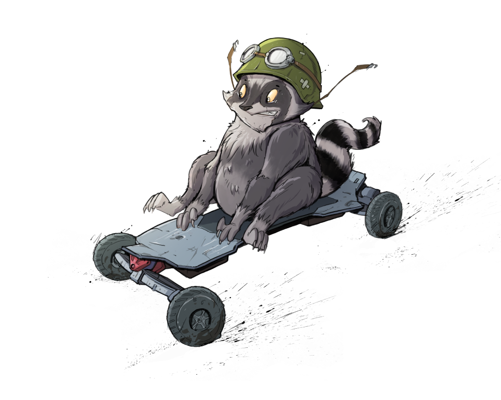

Hello! 👋
We're the (small) team developing FreeSK8 - an open source hardware and software reference platform providing all necessary power, motor control, lighting, navigation, logging and wireless control under one OS umbrella. Open reference specs of all included devices will be published under various free and open software licenses such as GPL GNU v3, CC BY-SA 4.0, CERN-OHL-S V2.0, etc.
What's FreeSK8?
FreeSK8 System is an Open Source, comprehensive eboarding & LEV system comprised of multiple devices that communicate with each other to provide critical system sensor & fault data to the rider & other system components.
These systems are comprised of the Robogotchi Datalogger & GPS Module, the FreeSK8 Remote & Wireless Receiver Module (OSRR 1.0), the FreeSK8 netBMS, Power Switch, & LightShow- a light & general purpose IO controller.
In the longer term, it is our goal to expand our hardware offerings into full eBoard Kits with open source reference documentation on each component.